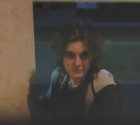
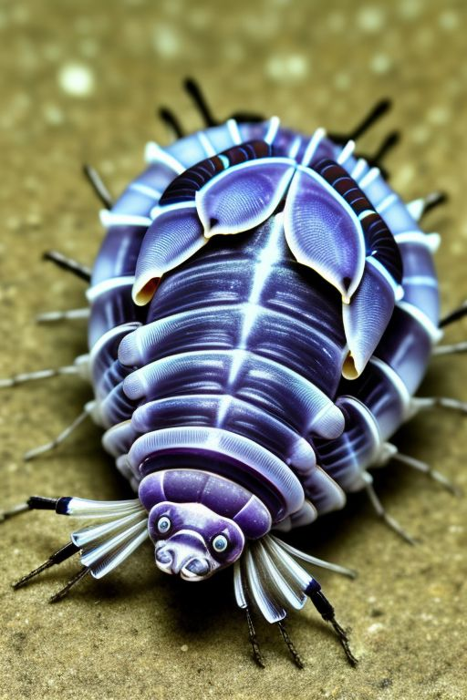
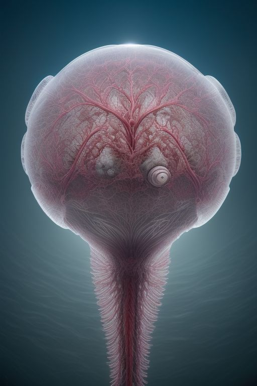

Falsautim
The entity under investigation remains largely unidentified, and available data on its nature and behavior is limited. Preliminary observations suggest that this creature exhibits specific predatory tendencies, targeting a singular individual at a time. The underlying reasons for its selection of a target are still unclear, and the methods by which it executes its attack remain poorly understood.
Behavior:
The creature appears to focus on one individual, pursuing them until the target is neutralized or otherwise removed. After the attack, the entity demonstrates a remarkable ability to mimic the appearance of the victim, effectively disguising itself as the target. The mechanisms by which the entity achieves this transformation remain unknown, as do the biological processes involved in this behavior.
Once the entity has assumed the form of the victim, it proceeds to adopt behaviors and actions resembling those of the individual it has imitated. It will continue this mimicry until it identifies a new target to pursue. At this point, it shifts focus and initiates the cycle once again. The duration for which it maintains the disguise is unclear, but there are indications that the mimicry is not flawless.
Physical and Temporal Anomalies:
While the creature’s true appearance remains unknown, it is hypothesized that the disguise is not perfect. Over time, the appearance of the entity may begin to degrade, with the mimicry becoming increasingly distorted or "off," suggesting instability in the disguise. This deterioration could manifest as an unnatural or "strange" physical appearance that may trigger suspicion or alert others to the entity’s true nature.
Additionally, there is evidence to suggest that the entity may retain partial memories or characteristics of the individual it has imitated. This ability, while not fully understood, could potentially enhance its capacity to deceive those around it, as the entity may be able to adopt behaviors or knowledge specific to the victim.
Documentation and Current Status:
Currently, the only known documentation of this entity is a single video recording, which provides limited insight into its behavior and characteristics. The authenticity of the video has not been called into question, though further footage or corroborating evidence remains elusive. At present, no additional information has been located that could further explain the creature’s origins, abilities, or motivation.
Conclusion:
The creature remains a subject of ongoing investigation. Its predatory nature, ability to mimic its victims, and potential to retain partial memories of its targets present significant challenges to our understanding. The incomplete nature of the available data, along with the entity’s apparent ability to disguise its true form, complicates efforts to identify and contain it. Further study and more extensive documentation are required to shed light on its full range of capabilities and its underlying nature.
Gas-Like-Creature
Introduction:
Occasionally, individuals report perceiving unusual, unexplained odors—perhaps a scent of lavender while working in an office, or the distinct aroma of birthday cake while walking through a downtown area. These peculiar smells may, in some cases, be attributed to a phenomenon known as GLC swarms.
Behavior
GLC are primarily decomposers, subsisting on decaying organic plant matter. As a result, they play a crucial role in nutrient cycling within their ecosystem. Due to their metabolic efficiency, GLC can survive for extended periods without consuming food, as their caloric expenditure is minimal. The mass of a swarm often carries a detectable scent—typically that of decaying plant material—which accounts for the unexpected and mysterious odors reported in areas where GLC are present. These creatures, while harmless to humans, are frequently the undetected source of such odors, making them the likely culprits for otherwise unidentifiable smells.
Characteristics and Appearance:
GLC are diminutive Isopods, among the smallest known organisms in the world, averaging a size of only 0.12 millimeters. Due to their minuscule size, they congregate in large swarms, typically numbering around 16,000 individuals per group. These swarms are not bound by conventional locomotion; instead, GLC utilize air currents, both large and small, to travel. Their low mass and size allow them to remain suspended in the atmosphere, often moving with the slightest breeze.
GLC are nearly invisible to the naked eye, given their small size. However, with the aid of modern magnification technologies, they have been observed to exhibit a faint bluish-purple hue. Their bodies are predominantly transparent, adding to their elusive nature. Morphologically, they closely resemble Isopods, though their ability to float through the air distinguishes them from their aquatic relatives, highlighting a fascinating divergence in evolutionary adaptation.
Conclusion:
In summary, GLC swarms represent an intriguing ecological and biological phenomenon. These creatures, though nearly undetectable to the naked eye, have a significant impact on their environment by decomposing organic matter and contributing to the diffusion of scents into the surrounding air. Should one encounter an unusual odor, it may be worth considering the presence of a GLC swarm. However, in cases of extreme concern, it remains prudent to contact the relevant authorities for further investigation.
Vaculobe (Vasculisphaera)
HRMC93
Tuning Beetles